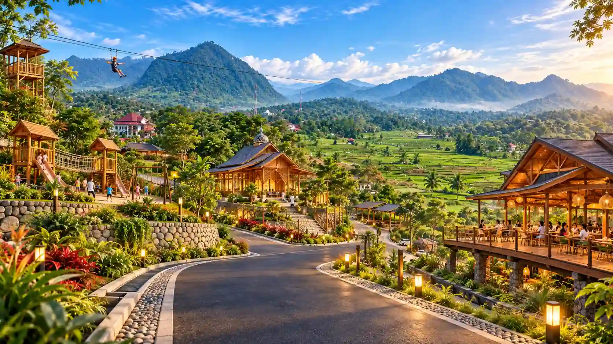

Property · Nature · Leisure · Lifestyle
Gallery Harmoni Hanjawong Village
Dokumentasi visual kawasan Harmoni Hanjawong Village di Sukamakmur, Puncak 2, Bogor—menampilkan panorama alam, lingkungan, dan suasana kawasan.
Jelajahi GalleryDokumentasi kawasan
Galeri Foto Harmoni Hanjawong Village
Jelajahi koleksi foto Harmoni Hanjawong Village, Puncak 2 Sukamakmur Bogor.
Arahkan kursor ke kolase untuk menjeda animasi. Pilih foto untuk melihat ukuran lebih besar.
Harmoni Hanjawong Village
Harmoni Hanjawong Village merupakan proyek ke-14 PT Harmoni Grup Indonesia yang berlokasi di Desa Sukamakmur, Kabupaten Bogor, Jawa Barat. Mengusung konsep Property, Nature, Leisure & Lifestyle, kawasan ini menawarkan kavling tanah berstatus SHM dengan panorama alam Sukamakmur dan view Gunung Hanjawong. Pemanfaatan lahan mengikuti karakter kavling, peruntukan ruang, dan ketentuan yang berlaku.
Jadwalkan Survei Lokasi